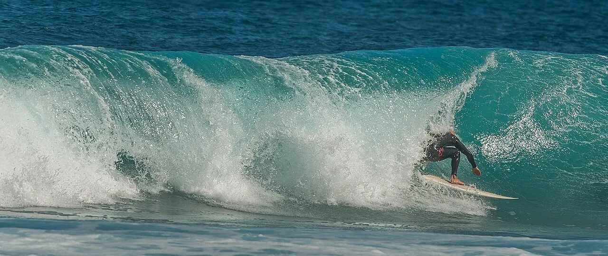

El Cotillo
Fuerteventura, Espagne · surf, baignade, snorkeling

Village de pêcheurs au nord-ouest de Fuerteventura, avec des beach breaks puissants au sud et des lagunes calmes au nord. Deux ambiances pour une même journée.
- Lieu
- Fuerteventura, Espagne
- Niveau
- Intermédiaire
- Activités
- surf, baignade, snorkeling
- Type d'eau
- Mer / océan
- Coordonnées
- 28.68, -14.01 (position approximative du secteur)
Dangers à connaître
- Shore break violent côté plage sud.
- Récifs de lave coupants.
Le conseil d'Ocean Buddy
Les lagunes du nord sont parfaites pour les enfants ; le surf se passe côté sud.
Ouvrir dans Ocean Buddy Télécharger sur l'App Store
Source : Fiche Ocean Buddy · septembre 2026 · à vérifier localement.